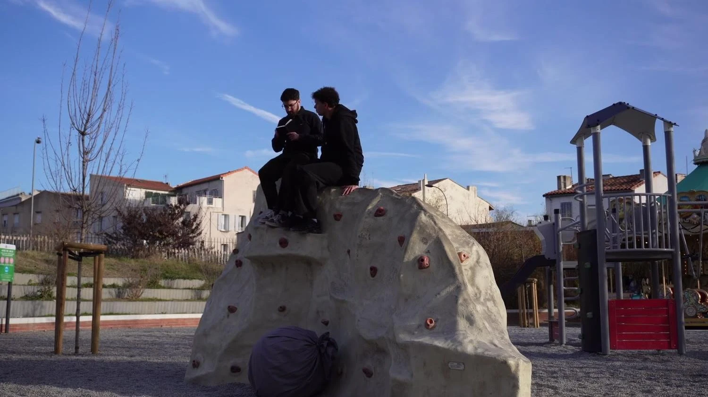
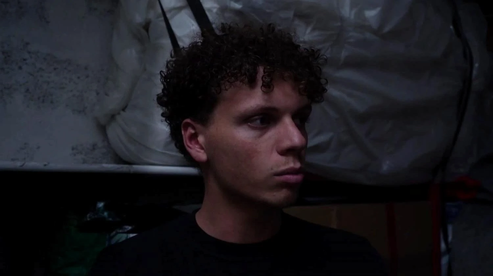
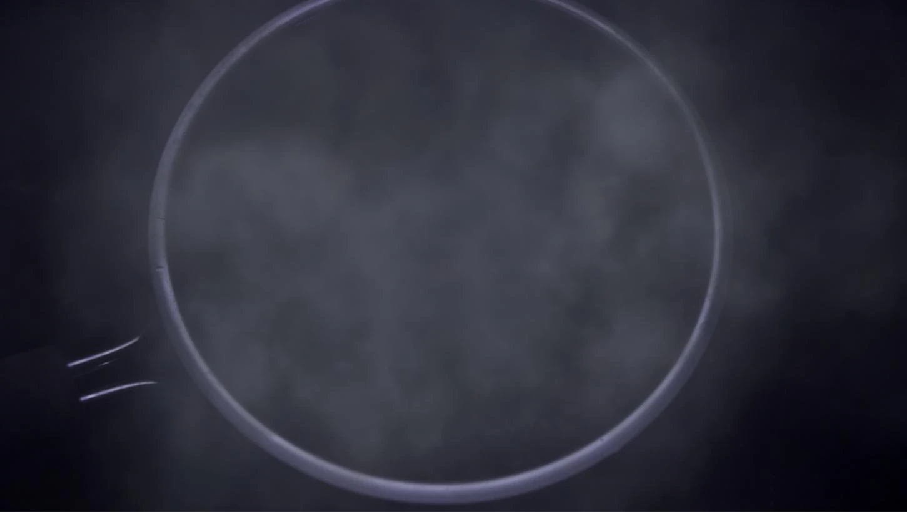
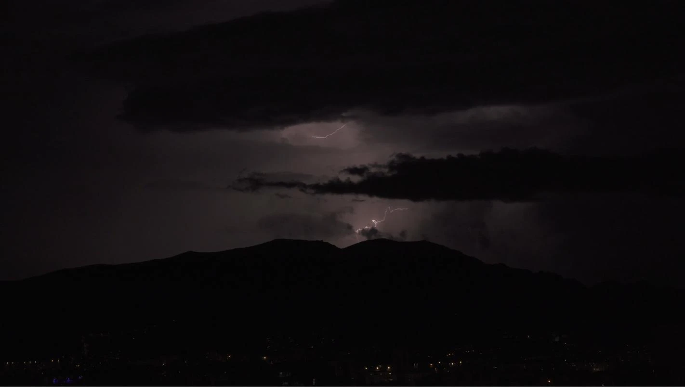
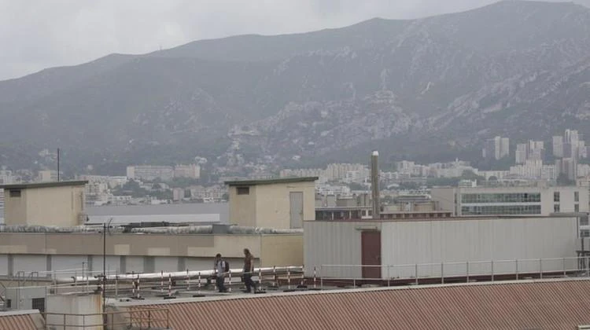
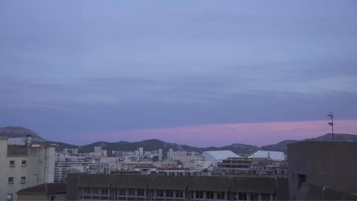

Nomade
↗Dans un parc, deux jeunes hommes poursuivent des objectifs dérisoires : pousser une énorme boule au sommet d’une pente et terminer un poème. De leurs échecs répétés naît une amitié inattendue.
Auteur / Réalisateur / Monteur
Cinéaste indépendant · Paris, France
Auteur / Réalisateur / Monteur
Fictions et recherches sensorielles. Explorer le temps, la mémoire et ce qui se joue entre les êtres.
Stage aux États-Unis · 4 mai 2027 · 22 à 26 semaines

Un photogramme de Nomade NOMADECourt-métrage de fiction · 20255:4101 / Les films
Trois entrées dans mon travail.
Choisir un film, voir et explorer.
Dans un parc, deux jeunes hommes poursuivent des objectifs dérisoires : pousser une énorme boule au sommet d’une pente et terminer un poème. De leurs échecs répétés naît une amitié inattendue.
Auteur / Réalisateur / Monteur

022:34Après un décès, deux jeunes hommes peinent à affronter le deuil. L’un se réfugie dans les questions pratiques, tandis que les silences et l’éloignement des corps disent ce que les mots ne peuvent exprimer.
Auteur / Réalisateur / Monteur

03Série en coursUne série expérimentale sur le retour de fragments du passé à travers les sens. Gestes, vapeur, lumière et matières organiques se confrontent aux formes géométriques, à la répétition et à l’enfermement.
Auteur / Réalisateur / Monteur
Quatre chapitres filmés. Le cinquième, Goût, reste en développement.
02 / Profil
Cinéaste français, je suis également étudiant en dernière année du cycle ingénieur à CY Tech, spécialité intelligence artificielle. J’écris, réalise et monte des courts-métrages indépendants de fiction et expérimentaux.
Mes films partent des êtres et de leur environnement : un geste répété, une parole retenue, un paysage qui change. À la pratique du cinéma s’ajoute une expérience du développement, des données et des méthodes de travail techniques reproductibles.
Télécharger le CV américainDaVinci Resolve · Montage · Prise de vues · Bases de la prise de son · Tournages en petite équipe
Python · SQL / SQLite · Git · PyTorch / Transformers · Streamlit
Français — langue maternelle
Anglais — avancé
Expérience & formation
Express CaféStage données / développement · Mai–août
Tiime, ParisStage machine learning · Juin–août
CY TechDiplôme d’ingénieur / IA · Année prévue d’obtention
03 / En création
Un paysage familier.
Un film au fil des mois.



Documentaire d’observation · En tournage
Depuis une même terrasse, je filme Marseille au fil des mois : lumière, saisons, météo et activité humaine. Les variations d’un paysage familier se mêlent aux voix de la famille hors champ et aux événements imprévus.
Marseille / 2026–2027
Documentaire en tournage · Montage en préparation
04 / Faire connaissance
Je recherche un stage pratique aux États-Unis en production, en postproduction cinématographique ou dans les processus techniques liés à l’image.
Basé à Paris, France · Français / Anglais